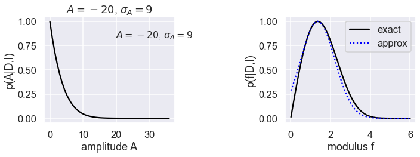
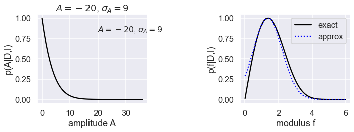

4.6. Error propagation: Example 3.6.2 in Sivia¶
Problem to solve¶
This example illustrates a potential pitfall in a naive analysis of error propagation where we need to take a square root. The context is the analysis of diffraction studies of crystalline materials. The Bragg (or signal) peak is estimated using the signal-plus-background model considered earlier. Suppose this was done with a least-squares fitter (as opposed to a full Bayesian analysis) and a value \(A = A_0 \pm \sigma_A\) is obtained.
This amplitude is related to the modulus squared of the complex structure factor (we’ll say equal), so \(A = |F|^2 = f^2\), with \(f = |F|\). Our question is: what is the best estimate \(f_0\) with error \(\sigma_f\)?
Naive short cut for error propagation¶
It might seem that we can short cut a detailed treatment of error propagation simply by differentiating the relation between \(A\) and \(f\) at \(f_0\), squaring and taking expectation values:
Since \(\langle\delta A^2\rangle = \sigma_A^2\), we can solve for \(\sigma_f = \sqrt{\langle \delta f^2 \rangle}\) to get:
However, in the problem at hand, \(A_0\) can be negative if there are weak and strongly overlapping reflections (or signal peaks). In this case the expression doesn’t make sense.
There are two mistakes here:
1. We have not distinguished between the likelihood, which is assumed to be a Gaussian distribution with mean (and maximum) \(A_0\) and width \(\sigma_A\), and the posterior. By Bayes’ theorem the two are related by the likelihood being multiplied by a prior pdf (and a normalization, which we don’t need to consider here). We have not accounted for the physics of \(A\) in the latter, namely that it is never negative. So we need something like:
With a likelihood
the best estimate for \(A\) will be positive even if \(A_0\) from fitting the data is negative.
2. In the latter case, the posterior will be a truncated Gaussian that violates the implicit assumptions of the naive estimate, which is the second mistake. The estimate assumes we can expand around a central maximum, which won’t be true in this case.
Doing it for real¶
So what do we do instead? Just apply the full expression for changing variables in pdfs:
The third line is a Gaussian approximation to the full posterior for \(f\) in the second line, found by Taylor expanding the logarithm \(L = \log[p(f|D,I)]\) to second order in \(f\) about \(f_0\) (as we have done before). The first derivative is set to zero, identifying
and the second derivative is minus one over the variance, identifying
We can use as our estimate \(f = f_0 \pm \sigma_f\) based on these formulas.
Numerical illustrations¶
import numpy as np
import matplotlib.pyplot as plt
%matplotlib inline
from scipy import special
# Not really needed, but nicer plots
import seaborn as sns
sns.set()
sns.set_context("talk")
# Set up the functions to plot
# Posterior p(A|D,I)
def A_posterior(A, A0, sigA):
pA = np.exp(-(A-A0)**2/(2*sigA**2))
return pA/np.max(pA)
# Naive analysis (only works for A0>0)
def f_likelihood(f, A0, sigA):
# likelihood p(D|f,I)
sigf = sigA / (2*np.sqrt(A0))
pf = np.exp(-(f-np.sqrt(A0))**2/(2*sigf**2))
return pf/np.max(pf)
# Full posterior (with correct error propagation)
def f_posterior(f, A0, sigA):
# p(f|D,I) normalized so one at the peak
pf = f*np.exp(-(f**2-A0)**2/(2*sigA**2))
return pf/np.max(pf)
# Approximate posterior
def f0(A0, sigA):
# approximate peak of f_posterior
return np.sqrt((A0 + np.sqrt(A0**2 + 2*sigA**2))/2)
def varf(A0, sigA):
# approximate variance of f_posterior
f0t = f0(A0,sigA)
return 1/(1/f0t + 2*(3*f0t**2 - A0)/sigA**2)
def f_posterior_gaussian(f, A0, sigA):
# gaussian approximation to full correct posterior
pf = np.exp(-(f - f0(A0,sigA))**2/(2*varf(A0,sigA)))
return pf/np.max(pf)
for (A0,sigA) in [(9,1),(1,9),(-20,9)]:
maxA = max(2*A0,4*sigA)
A_arr = np.linspace(0.001,maxA)
f_arr = np.linspace(.01, np.sqrt(maxA))
fig,ax = plt.subplots(1,2,figsize=(10,4))
ax[0].plot(A_arr, A_posterior(A_arr,A0,sigA), color='black')
ax[1].plot(f_arr, f_posterior(f_arr,A0,sigA), color='black', label='exact')
ax[1].plot(f_arr, f_posterior_gaussian(f_arr,A0,sigA), linestyle='dotted', color='blue', label='approx')
if A0>0:
ax[1].plot(f_arr, f_likelihood(f_arr,A0,sigA), linestyle='dashed', color='red', label='naive')
ax[0].set(xlabel='amplitude A',ylabel='p(A|D,I)')
plt.text(0.55,0.8, f'$A={A0}$, $\sigma_A={sigA}$', transform=ax[0].transAxes,fontsize=16)
ax[0].set_title(f'$A={A0}$, $\sigma_A={sigA}$')
ax[1].set(xlabel='modulus f',ylabel='p(f|D,I)')
ax[1].legend()
plt.tight_layout()

 

Comments¶
The graphs show three cases, with the posterior for the amplitude \(A\) on the left and the posterior for \(f\) on the right in each case. The exact posterior for \(f\) is a black solid line, the Gaussian approximation is a dotted blue line, and the naive approximation is a dashed red line.
Case 1 is \(A=9\), \(\sigma_A = 1\), which is a “normal” peak. All of the posteriors for \(f\) agree.
Case 2 has \(A=1\), \(\sigma_A = 9\), so a broad Gaussian that is cut off at \(A=0\). The Gaussian approximation to the \(f\) posterior is good near the peak and gets worse for small \(f\), while the naive approximation is terrible everywhere.
Case 3 has \(A=-20\), \(\sigma_A=9\), so the naive approximation can’t even apply! The Gaussian approximation is again very good near the peak then degrades slightly away from the peak.